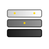

Current Style (White/Monochrome)
hdrpop-icon.svg
READY TO USEFuture Style (Colored)
hdrpop-icon-photo-colored.svg
FOR LATERAlt: Sun/Brightness (Colored)
hdrpop-icon-sun.svg
BACKUP OPTION

Alt: Exposure Layers (Colored)
hdrpop-icon-layers.svg
BACKUP OPTION